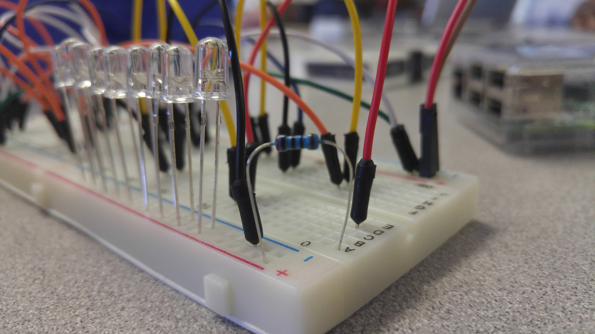
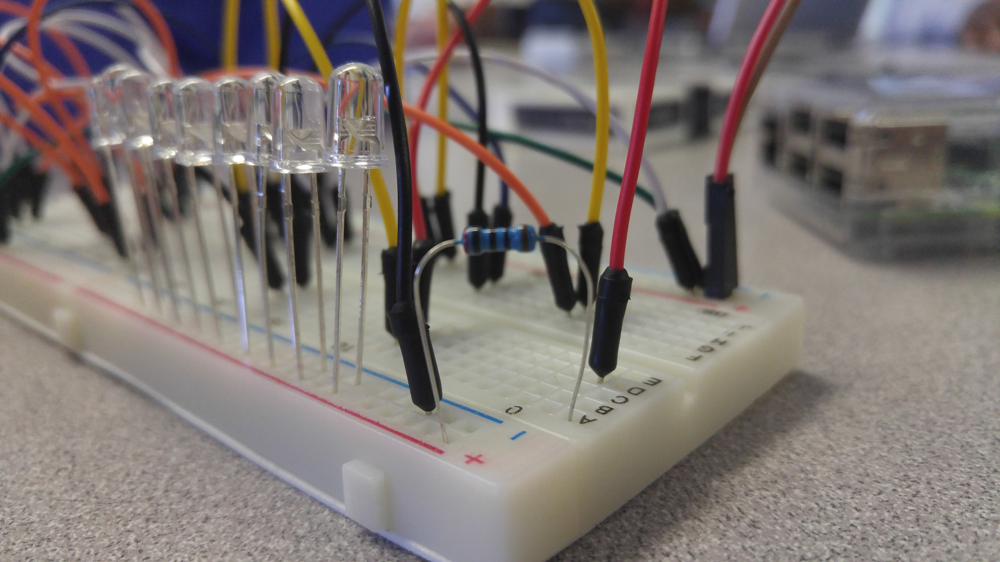

The first challenge in the Python LED Project was to create a circut that lights up at least one light. In the images below, the red, larger wire is the power conduit, and the brown wire of the same size is the "ground" connection. As with much of this project, simplicity is not my forte. I'd rather make things complicated, especially when it comes to challenging others, and as such, this is the result. This wiring, despite looking like earbuds after they come out of the pockets, powers the lights because the power connects to the same bar as the resistor, and the ground connects to the same bar as the negative ends of the lights. Thus light.
The second circut does not work because the power does not connect to the same bar as the resistor, and thus no power is flowing into the lights, which means no light. To fix this problem, make sure the resistors are properly alligned with the power cable.
 

The second challenge in the Python LED Project was to code a script, using Python, that would execute a script that creates a pattern of flashing lights for about five seconds. Again, I went above and beyond, and coded a script that detects user input and flashes the morse code equivalent on the lights. It also recognizes capital letters, puntuation and special characters. This also meets the requirement for the second challenge "User Input." Here is a link to a text file with the approximately nine hundred lines of code. Click here.